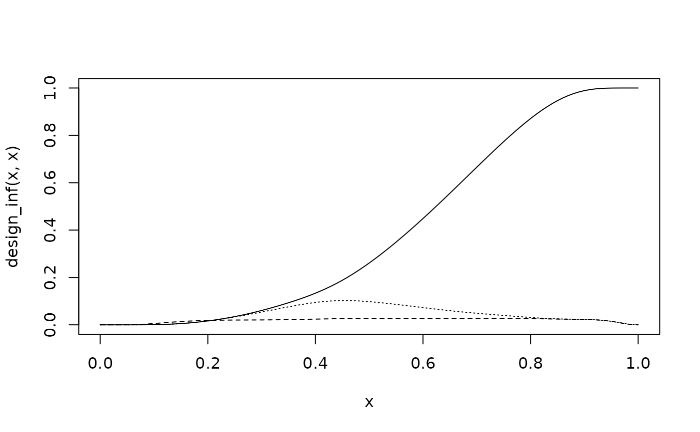
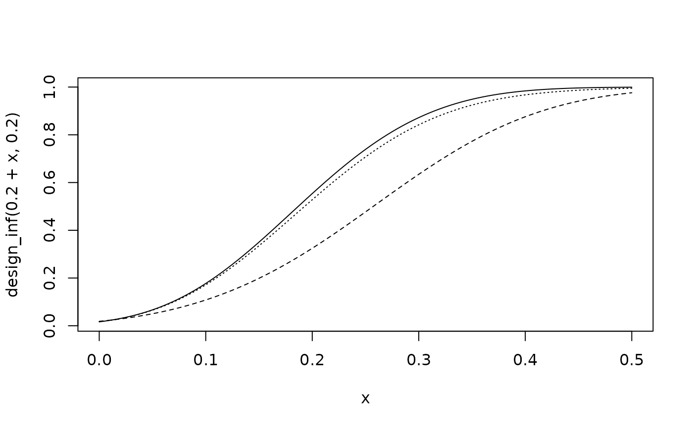

The oc2S function defines a 2 sample design (priors, sample
sizes & decision function) for the calculation of operating
characeristics. A function is returned which calculates the
calculates the frequency at which the decision function is
evaluated to 1 when assuming known parameters.
Usage
oc2S(prior1, prior2, n1, n2, decision, ...)
# S3 method for class 'betaMix'
oc2S(prior1, prior2, n1, n2, decision, eps, ...)
# S3 method for class 'normMix'
oc2S(
prior1,
prior2,
n1,
n2,
decision,
sigma1,
sigma2,
eps = 1e-06,
Ngrid = 10,
...
)
# S3 method for class 'gammaMix'
oc2S(prior1, prior2, n1, n2, decision, eps = 1e-06, ...)Arguments
- prior1
Prior for sample 1.
- prior2
Prior for sample 2.
- n1, n2
Sample size of the respective samples. Sample size
n1must be greater than 0 while sample sizen2must be greater or equal to 0.- decision
Two-sample decision function to use; see
decision2S.- ...
Optional arguments.
- eps
Support of random variables are determined as the interval covering
1-epsprobability mass. Defaults to \(10^{-6}\).- sigma1
The fixed reference scale of sample 1. If left unspecified, the default reference scale of the prior 1 is assumed.
- sigma2
The fixed reference scale of sample 2. If left unspecified, the default reference scale of the prior 2 is assumed.
- Ngrid
Determines density of discretization grid on which decision function is evaluated (see below for more details).
Value
Returns a function which when called with two arguments
theta1 and theta2 will return the frequencies at
which the decision function is evaluated to 1 whenever the data is
distributed according to the known parameter values in each
sample. Note that the returned function takes vector arguments.
Details
The oc2S function defines a 2 sample design and
returns a function which calculates its operating
characteristics. This is the frequency with which the decision
function is evaluated to 1 under the assumption of a given true
distribution of the data defined by the known parameter
\(\theta_1\) and \(\theta_2\). The 2 sample design is defined
by the priors, the sample sizes and the decision function,
\(D(y_1,y_2)\). These uniquely define the decision boundary , see
decision2S_boundary().
Calling the oc2S function calculates the decision boundary
\(D_1(y_2)\) (see decision2S_boundary()) and returns
a function which can be used to calculate the desired frequency
which is evaluated as
$$ \int f_2(y_2|\theta_2) F_1(D_1(y_2)|\theta_1) dy_2. $$
See below for examples and specifics for the supported mixture priors.
Methods (by class)
oc2S(betaMix): Applies for binomial model with a mixture beta prior. The calculations use exact expressions. If the optional argumentepsis defined, then an approximate method is used which limits the search for the decision boundary to the region of1-epsprobability mass. This is useful for designs with large sample sizes where an exact approach is very costly to calculate.oc2S(normMix): Applies for the normal model with known standard deviation \(\sigma\) and normal mixture priors for the means. As a consequence from the assumption of a known standard deviation, the calculation discards sampling uncertainty of the second moment. The function has two extra arguments (with defaults):eps(\(10^{-6}\)) andNgrid(10). The decision boundary is searched in the region of probability mass1-eps, respectively for \(y_1\) and \(y_2\). The continuous decision function is evaluated at a discrete grid, which is determined by a spacing with \(\delta_2 = \sigma_2/\sqrt{N_{grid}}\). Once the decision boundary is evaluated at the discrete steps, a spline is used to inter-polate the decision boundary at intermediate points.oc2S(gammaMix): Applies for the Poisson model with a gamma mixture prior for the rate parameter. The functionoc2Stakes an extra argumenteps(defaults to \(10^{-6}\)) which determines the region of probability mass1-epswhere the boundary is searched for \(y_1\) and \(y_2\), respectively.
References
Schmidli H, Gsteiger S, Roychoudhury S, O'Hagan A, Spiegelhalter D, Neuenschwander B. Robust meta-analytic-predictive priors in clinical trials with historical control information. Biometrics 2014;70(4):1023-1032.
See also
Other design2S:
decision2S(),
decision2S_boundary(),
pos2S()
Examples
# example from Schmidli et al., 2014
dec <- decision2S(0.975, 0, lower.tail = FALSE)
prior_inf <- mixbeta(c(1, 4, 16))
prior_rob <- robustify(prior_inf, weight = 0.2, mean = 0.5)
prior_uni <- mixbeta(c(1, 1, 1))
N <- 40
N_ctl <- N - 20
# compare designs with different priors
design_uni <- oc2S(prior_uni, prior_uni, N, N_ctl, dec)
design_inf <- oc2S(prior_uni, prior_inf, N, N_ctl, dec)
design_rob <- oc2S(prior_uni, prior_rob, N, N_ctl, dec)
# type I error
curve(design_inf(x, x), 0, 1)
curve(design_uni(x, x), lty = 2, add = TRUE)
curve(design_rob(x, x), lty = 3, add = TRUE)

# power
curve(design_inf(0.2 + x, 0.2), 0, 0.5)
curve(design_uni(0.2 + x, 0.2), lty = 2, add = TRUE)
curve(design_rob(0.2 + x, 0.2), lty = 3, add = TRUE)
